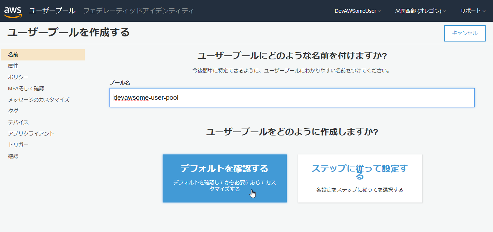
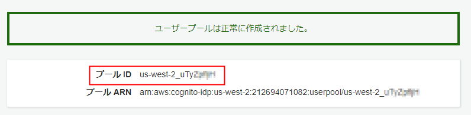
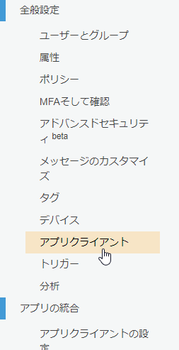
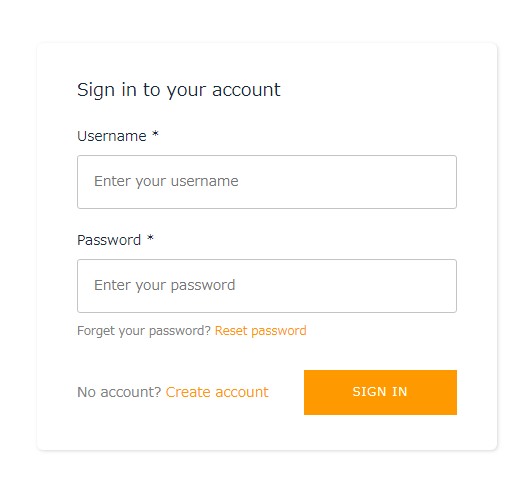
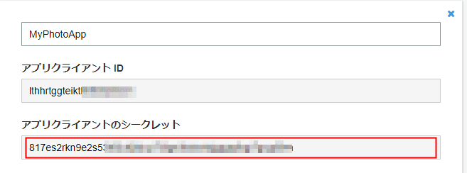
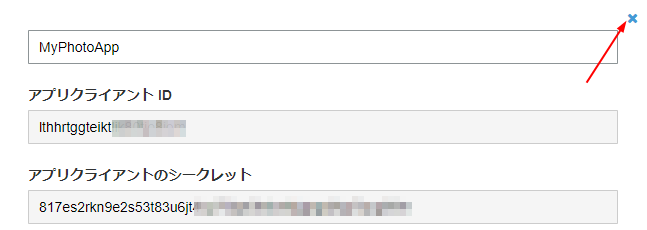

Lab03: Amazon Cognito を構成してアプリケーションに認証と認可の仕組みを組み込む
このラボでは、Amazon Cognito を利用して、アプリケーションに認証・認可の仕組みを組み込みます。

Amazon Cognito は、シンプルで安全なユーザーサインアップ、サインイン、およびアクセス制御の機能をウェブアプリケーションやモバイルアプリケーションに素早く簡単に追加することができるサービスです。
今回は、Cognito を利用して、アプリケーションに認証と認可（＝アクセス制御）の仕組みを組み込みます。
AWS Congito には、大きく３つの機能があります。
- Amazon Cognito ユーザープール
- ユーザを管理するユーザディレクトリを作成し、アプリケーションにサインイン・サインアップを機能（＝認証機能）を追加できます。また、認証のための基盤を自前で用意する必要がありません。
- Amazon Cognito フェデレーテッドアイデンティティ
- ID プロバイダー(IdP) と連携し、アプリケーションへAWSへの一時的認証情報を払い出すことができます。アプリケーションはこの一時的認証情報を利用して、AWS の各種サービスにアクセスできます。（＝認可機能）
- ID プロバイダとして、上記のCognito ユーザープール 以外に、Amazon/Facebook/Google といったパブリックプロバイダーなども利用することもできます。
- Amazon Cognito Sync
- モバイルアプリケーションなどで、デバイス上のデータとCogntino 間でユーザデータの同期ができます。例えば、電波状況が悪くオフラインのデバイスと、電波状況が改善してオンラインになったらデータを同期したり、もしくは複数デバイス間でデータを同期する場合に利用できます。（※Amazon Cognito Sync を初めて使用する場合は、AWS AppSync を使用してください。AWS AppSync は、Amazon Cognito Sync のように、デバイス間でアプリケーションデータを同期するための新しいサービスです。）
このラボでは、ユーザプールとフェデレーテッドアイデンティティ 機能を利用してアプリケーションに認証と認可の仕組みを追加します。
Amazon Cognito の構成
Amazon Cognito のユーザープールの構成
Cognito ユーザープールを構成すると、アプリケーションのユーザを管理し、アプリケーションにサインアップとサインインの機能を追加できます。ユーザプールは何百万人ものユーザまで拡張でき、開発者にとってシンプル、安全、そして低コストに利用できるように設計されています。
マネージメントコンソールを表示します。リージョンが オレゴン であることを確認し、サービス から Cognito を選択します。Cognito は、セキュリティ、アイデンティティ、コンプライアンス カテゴリにあります。見つからない場合は、検索フィールドに Cognito と入れてください。
Amazon Cognito のトップ画面が表示されたら、ユーザープールの管理 をクリックします。
画面右上の ユーザープールを作成する ボタンをクリックします。
ユーザープールにどのような名前を付けますか？ 画面で、プール名 に、“devawsome-user-pool” と入力します。
デフォルトを確認する ボタンをクリックします。

確認 画面で、画面下の プールの作成 ボタンをクリックします。
ユーザープールは正常に作成されました。 が表示されます。
この画面の プールID をコピーして、テキストファイルなどにコピーして控えておきます。後で利用します。

画面左側のナビゲーションペインで、全般設定 カテゴリの、アプリクライアント をクリックします。

右側に表示された画面の アプリクライアントの追加 リンクをクリックします。
このユーザープールへのアクセス権限があるアプリクライアントはどれですか? 画面で、アプリクライアント名 に “MyPhotoApp” と入力します。
クライアントシークレットを生成 のチェックを外します。今回は、Webベースのアプリケーションを作成しますが、Webベースアプリケーションでは、クライアントシークレットはサポートしていません。

アプリクライアントの作成 をクリックします。
次の画面で、アプリクライアントID が表示されますので、この値をテキストファイルなどにコピーして控えておきます。ユーザプールの設定は以上で終了です。
Amazon Cognito フェデレーテッドアイデンティティの構成
フェデレーテッドアイデンティティを構成することで、認証を受けたユーザに対して、AWS に対してどのような操作が可能かのアクセス制御機能(=一般に認可と呼ばれます) を追加します。アクセスコントロールには、IAM ロールが利用されます。
マネージメントコンソールの 上側の ユーザプールの横にある フェデレーティッドアイデンティティ をクリックします。

使用開始ウィザード 画面が表示されます。(表示されない場合は、新しいIDプールの作成 ボタンを押して下さい。)
使用開始ウィザード にて、IDプール名 に “DevAWSomeIDPool” と入力し、画面下側の 認証プロバイダー をクリックして展開します。
認証プロバイダー の Cognito タブにて、ユーザプールID と アプリクライアントID に先ほど控えておいた値を入力します。

画面右下の プールの作成 ボタンをクリックします。
Your Cognito identities require access to your resources 画面が表示されたら、詳細を表示 をクリックします。以下のようなロールの情報が表示されます。

ここで作成されるIAM ロールは、Cognito ユーザプールで認証を受けたユーザが引き受けることができるロールになります。Cognito から、このIAM ロールの権限を持つ一時的な認証情報が払い出され、アプリケーション内のコードでから各種AWSのサービスにアクセスができるようになります。IAM ロールが２つ定義されていますが、上側は認証済みのアカウントに適用できるIAM ロールで、下側は認証受けていないユーザに適用できるIAM ロールです。認証を受けていないユーザのIAM ロールは、例えばアプリケーションのゲストユーザに対して権限を与えるのに利用できます。
今回は特に何も設定せずに、右下の 許可 ボタンをクリックします。IAM ロールの内容は後で書き換えます。
Amazon Congito での作業開始 画面が表示されます。画面右上の ID プールの編集 リンクをクリックします。
ID プールの編集 画面で、ID プールのID をコピーして、テキストファイルに控えておきます。次のような内容になります。

例: us-west-2:24687639-1ec1-40c6-a1e3-abcdefgh
マネジメントコンソールの作業はここで一旦終了です。
アプリケーションに認証の仕組みを組み込む
先ほど作成したユーザプールを利用して、アプリケーションにサインアップ／サインイン機能を追加して動かしてみます。
Cloud9 画面の、左側の Environment にて、photoapp > web > src まで展開し、config.js ファイルをクリックして表示します。
config.js ファイルの、identityPoolId と userPoolId および userPoolWebClientId に先ほど控えておいた、ID プールのID、 プールID および アプリクライアントID を設定し ctrl + s でファイルを保存します。以下のようになります。（設定例であり、実際の値は異なります。）
…前略…
Auth: {
identityPoolId: 'us-west-2:24687639-1ec1-40c6-a1e3-bfd1ece81e5f',
region: 'us-west-2',
userPoolId: 'us-west-2_6v0eq5XGy',
userPoolWebClientId: '3sj9jbkeqfbq3h4nrllvnsbass'
},
…後略…
次に、photoapp > web > src の App.js ファイルを開きます。
Task: Authentication 1 とコメントアウトされている部分のコメント({/* */} 中括弧も含む)を取り除きます。(Auchenticator まで削除しないようにしてください。)
修正前：
<div className="container">
{/* Task: Auhentication 1
<Authenticator>
*/}
<MyPhotos />
{/* Task: Auhentication 1
</Authenticator>
*/}
</div>
修正後：
<div className="container">
<Authenticator>
<MyPhotos />
</Authenticator>
</div>
App.js を ctrl + s で保存します。
画面下のターミナルにて、yarn start が実行中であることを確認してください。実行していない場合は、再度yarn start でテストサーバを起動します。
Preview > Preview Runing Application をクリックしてアプリのプレビュー画面を表示します。前のモジュールと同様にプレビュー画面の右上の矢印ボタンをクリックして、ブラウザの別タブでプレビュー画面を表示します。
以下のような、 Sign in to your account 画面が表示されるようになります。

Username と Password に適当な文字を入力して、SIGN IN ボタンをクリックしてください。以下メッセージが表示されれば正常に設定できています。(まだアプリでアカウントは作っていないので、ユーザは存在していませんが、Cognito のユーザプールで処理が行われています。)
User does not exist
※ Note 上記手順で、もし Unable to verify secret hash for client lthhrtggteiktlikXXXXXX のようなメッセージが表示された場合は設定が誤っている可能性があります。以下の手順を展開して確認してください。
確認手順(展開して詳細を表示)
Unable to verify secret hash for client lthhrtggteiktlikXXXXXX が表示された場合は、以下の手順を実施してください。
ユーザプール devawsome-user-pool でアプリクライアントを選択肢、MyPhotoApp の 詳細を表示 をクリックしてください。
以下のように、アプリクライアントのシークレット に文字列が表示されている場合は、アプリクライアント作成時に クライアントシークレットを生成 にチェックを入れたまま作成しています。

この場合は、アプリクライアントを再作成する必要があります。画面右側の× 印を押してください。

アプリクライアントを削除しますか？ をクリックして削除します。 再度 MyPhotoApp という名称で、アプリクライアントを作成してください。その際に クライアントシークレットを生成 のチェックを必ず外してください。
作成された アプリクライアントID をコピーして控えておいてください。
この アプリクライアントID を IDプール に設定しなおします。
実際にアカウントを作成してみましょう。画面左下の Create account リンクをクリックしてください。
- Create a new account 画面で、Username、Password にはお好きなものを設定してください。Email には、この場で受信できるメールアドレスを入力してください。Phone Number には適当な数字(‘123456789’)を入力してください。入力には、以下の点にご注意ください。
- Password には、英字大文字, 英字小文字, 特殊文字(@ や ! など), 数字を入れる必要があります。
- Email には、この場で受信可能なアドレスが必要となります。もし、受信可能なアドレスをお持ちではない方は、例えばこのようなサービス を利用してワンタイムメールアドレスを利用することも可能です。
CREATE ACCOUNT ボタンをクリックします。
次に、Confirm Sign Up 画面が表示されます。先ほど入力したメールアドレスに、6桁の Verification Code が送信されますので、そのコードを画面の Confirmation Code に入力します。
CONFIRM ボタンをクリックします。これでアカウントの作成は、完了です。再度 Sign in Account 画面が表示されますので、Username と Password に先ほど設定した値を入力して、SIGN IN ボタンをクリックします。
次のような画面に遷移すれば正常に動作しています。右上に、ログイン中のユーザ名が表示されます。

以上で、アプリケーションの動作確認は終了です。
コードの解説
注 ここから先は、コードの解説をしています。ラボの進行には関係しませんので、ここを飛ばして次のラボに進むこともできます。
このラボのアプリケーションは、HTML とJavaScript で構成されていますが、画面描画制御には、React というJavaScript フレームワークを利用しています。React は画面の描画に特化したフレームワークで、Facebook が開発したフレームワークですが、現在はOSS として公開されています。
React は、いわゆるシングルページアプリケーションやモバイルアプリケーションの開発に利用でき、高速なレンダリング処理が特徴です。
現在は、ブラウザ上で動作するWebアプリケーションだけではなく、Android やiOS のアプリケーションに利用できる、React Native も提供されています。
このラボでは、もともと<MyPhotos> というReact コンポーネントが画面上に表示されていました。このアプリケーションに対して、以下のように <Authenticator> を追記して、MyPhotos を子要素に定義しました。これだけで、アプリケーションにサインイン／サインアップの仕組みを組み込むことができました。
<Authenticator>
<MyPhotos />
</Authenticator>
AWS では、AWS サービスをプログラミング言語から利用しやすくするための SDK（Software Development Kit） を提供しています。
(参考) AWS SDKs
JavaScript 用のSDK の一つとして、ウェブまたはモバイルプラットフォームでクラウド接続アプリケーションを構築する開発者向けの開発ツールとして、AWS Amplify を提供しています。
AWS Amplify に関しては、以下のドキュメント を参考にしてください。
AWS Amplify
AWS Amplify Getting Started
コード内でAmplify を利用する場合は、まず、Amplify.configure() で設定をします。 今回のアプリケーションでは、App.js 内の最初に記述されています。
import Amplify from 'aws-amplify';
import { Authenticator } from 'aws-amplify-react';
import { amplify_config } from './config'
Amplify.configure(amplify_config);
設定情報は、config.js 内に記載しています。設定する内容は、Amplify で利用するモジュールによって異なります。今回のアプリケーションでは、Auth、API および、Strorage モジュールを利用するため、それぞれの設定を記述しています。（ここまでの手順では、Auth の設定のみが実施されている状況です。）
Auth: {
identityPoolId: 'us-west-2:ffa58e4e-f1f9-4eef-9187-e0ca1234567',
region: 'us-west-2',
userPoolId: 'us-west-2_2ROe123456',
userPoolWebClientId: 'h21stsu5su3mi91234567'
},
API: {
endpoints: [{
name: 'DevAWSomeDayAPI',
endpoint: 'https://xxxxxxxxx.execute-api.us-west-2.amazonaws.com/prod',
region: 'us-west-2'
}]
},
Storage: {
bucket: 'devawsome-photo-xxxxx',
region: 'us-west-2'
}
今回利用した、<Authenticator> は、AWS Amplify のライブラリの一つで、ユーザのサインイン／サインアップ処理および画面をReact コンポーネントとして提供しています。 このラボで実施したように、<Authenticator> を追加するだけで、アプリケーションにサインイン/サインアップ処理を追加できます。 今回は組み込みのUI を利用しましたが、AWS Amplify の Auth モジュールを利用して、カスタムのサインイン／サインアップ画面を作成することもできます。
AWS Amplify Authenticator モジュールに関しては、以下のドキュメントを参考にしてください。
AWS Amplify Authentication
<Auhtenticator> で認証された情報は、子要素の <MyPhotos> に渡されます。web/src/MyPhotos.js を開いてください。 MyPhotos クラスでは、this.props.authState や this.props.authData といったプロパティで認証情報を受け取ることができます。
例えば、this.props.authState には認証ステータス(サインイン済みか否かなど)を表しており、この値のより表示するコンポーネントを切り替えることができます。
render() {
if (!this.props.authState) {
return (
<div className="jumbotron" >
<h2>Welcome to My Photo App. <br></br>Let's develop this application.</h2>
</div>
);
}
else if (this.props.authState === "signedIn") {
return (
<div className="jumbotron" >
<MyPhotoUpload authData={this.props.authData} authState={this.props.authState} />
<MyPhotoList authData={this.props.authData} authState={this.props.authState} />
</div>
);
}
else {
return (
<div></div>
);
}
}
this.props.authData には、認証者の情報が確認されています。例えば、以下のようにユーザ名を取得することができます。
let username;
if (this.props.authState === 'signedIn') {
username = this.props.authData.username;
}
以上で、このラボは終了です。